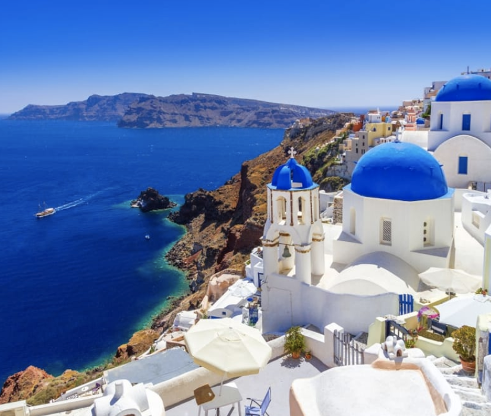
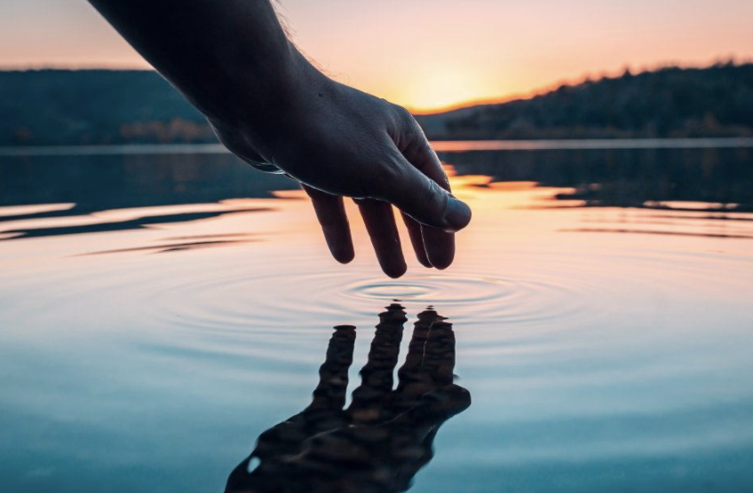
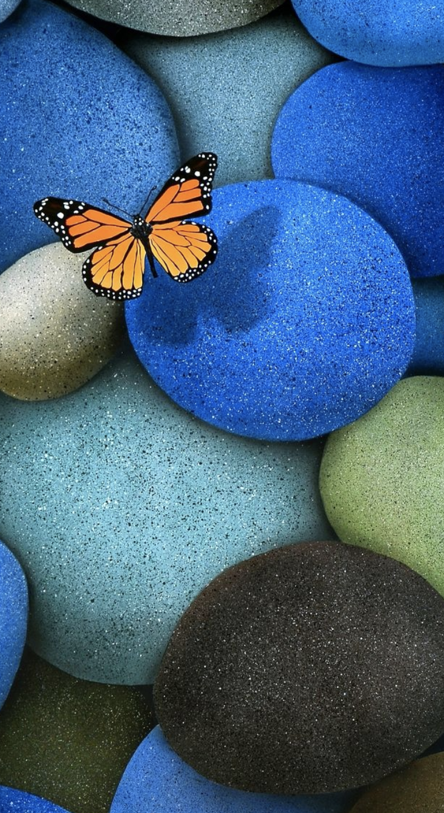
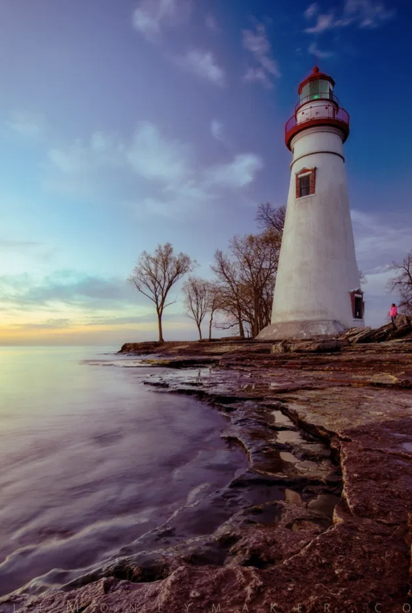

Tools for Slowing
Down
Chioe Geoghegan & Chioe Reith

The (Old) New
Spirit of Curating
and Myths of
Nomadism
Tim Gentles

Pressing
Singularities
Tendai John Mutambu &
Robyn Maree pickens
We're in This
Together
Vera Mey
The Curatorial as a
Liveable Subject
Position:
Hospitality
and
Differential
Consciousness
Danny Butt
Community,
Community Art,
Community Art in
Howick
Balamohan Shingade

Feeling Welcome?
Louisa Afoa &
loana Gordon-Smith

On Friendship
Rebecca Boswell